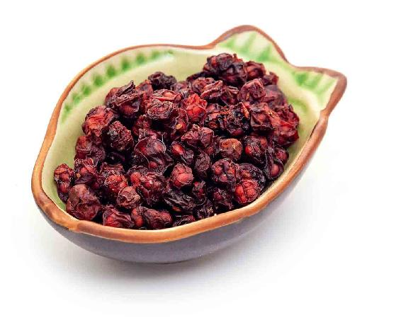
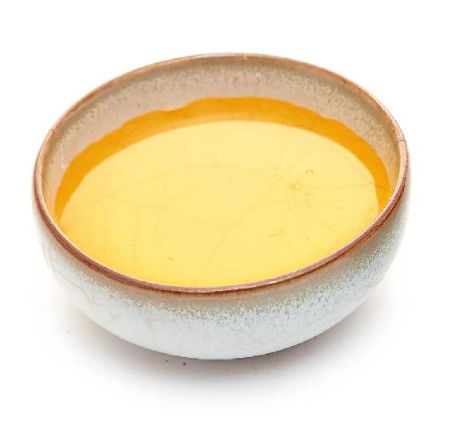
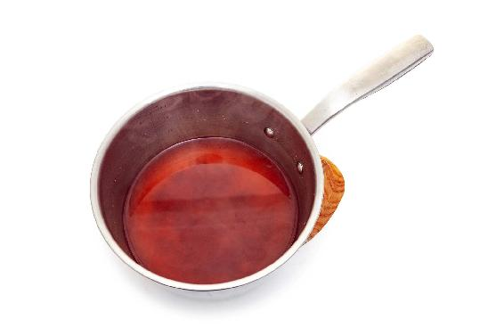
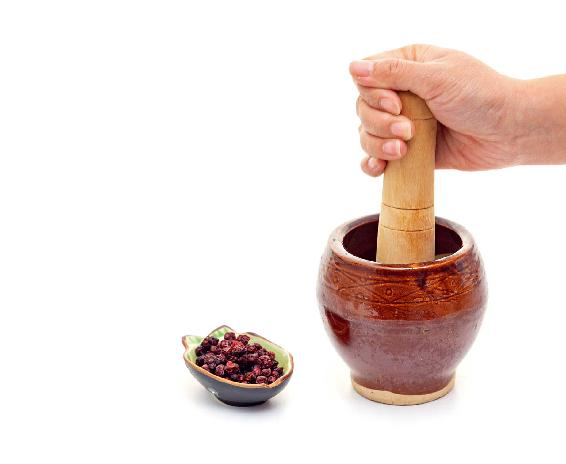
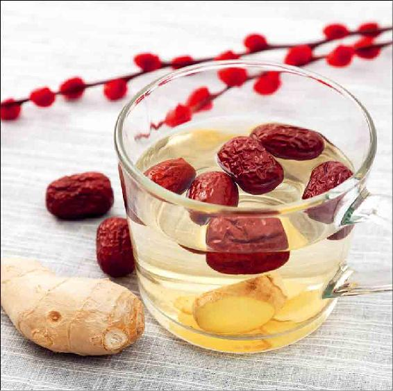

古书相传，有人坚持服用五味子十六年，“面色如玉女”（面色白嫩红润如同少女）。
这个看似神奇的记载，它的重点其实是“十六年”——长年坚持服用。
五味子、银耳、茯苓……这些比较平和的补品，偶尔吃几次可能感觉平常，但是长期坚持服用，补益强身的作用就会让人惊喜。
五味子有一个不用很久就能看到效果的功用——延长睡眠时间。
如果夜里睡不踏实，早上醒得很早，这种情况就可以用五味子来补一补。
这个茶名为“凉茶”，是因为夏天喝的时候可以不用加热，而且喝了它会让阴虚的人感觉心里没有那么烦热。但这道茶本身并不是凉性的。
气虚的人喝五味子茶，可以加党参、黄芪同煮，煮好后放入枸杞，药味互相调和，会好入口一些。而且五味子加党参、黄芪也是中成药黄芪生脉饮的主要原料，有养护心脏的功效。


原料：五味子、蜂蜜。


做法：
将五味子稍微捣一下，水煮30分钟，待温后加入蜂蜜。可以一次多煮点，放冰箱冷藏，需要时拿出来凉饮或热饮都可以。
功效：补五脏之气、促进睡眠。
适合：经常早醒的人，或运动、蒸桑拿、泡温泉后或大量出汗后饮用。
要想把五味子吃出更好效果，可以把五味子捣一下来用。
唐代的《新修本草》说：“五味，皮肉甘、酸，核中辛、苦，都有咸味，此则五味其也。”
五味子如果不捣，整个的泡水，泡出来的是皮肉的酸味，略带甘咸，功效偏于补肝肾。
捣碎之后，核里的味道有点苦，还带有一种刺激舌头的味道，这是辛味。这样五味子的酸苦甘辛咸五味都充分出来了，才能五脏皆补。
说实话，捣碎之后的五味子，味道不怎么好，有些人喝了一口就放弃了，错过一味好药。
但五味子正因为这奇特的味道，才具备独到的功效。它的五种味道都是有作用的。
五味子的酸味补肝，咸味补肾，苦味补心，辛味补肺，甘味补脾胃。所以五味子可以补五脏之气，功效强大，古人十分喜欢，当成“仙药”来吃，强调每年夏天要定期吃五味子来延年益寿。
若是吃不惯五味子的味道，可以加罗汉果、甘草或红糖来调味，或者熬成五味子膏（具体做法见《吃法决定活法》149页，此处不再重复）。经常失眠早醒、感觉记忆力下降、疲劳无神的人，可以长期服用来补养。
